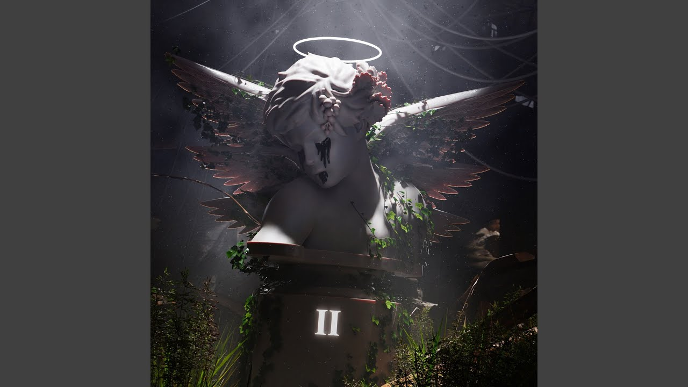

¡Descubre lo último de Mora la fruta infiel, solo aquí en Upmf-Music! 🌟 Sumérgete en el universo único de Mora con su más reciente lanzamiento. Con ritmos cautivadores y letras profundas, su nueva música promete llevarte a un viaje emocional que no querrás perderte.
Natanael Cano
¡Lo último de Natanael Cano, el rey de los Corridos Tumbados, solo aquí en Upmf-Music! 🎤👑 Vive la revolución musical con los nuevos éxitos de Natanael Cano que están marcando un antes y un después en el género regional mexicano.
The Neighbourhood
""The Neighbourhood", banda estadounidense formada en 2011 en California. Su estilo musical abarca el rock alternativo, el indie pop y el R&B, y se caracterizan por sus letras melancólicas y su estética distintiva.
"The Neighbourhood" ha ganado popularidad con canciones como "Sweater Weather", "Daddy Issues", "R.I.P. 2 My Youth", entre otras.
Su música a menudo presenta una combinación única de sonidos atmosféricos, sintetizadores y letras introspectivas.
Si te gustan bandas con un enfoque artístico y ecléctico, definitivamente deberías darle una escucha a "The Neighbourhood"
Morat
Morat es una banda colombiana de pop y folk que destaca por sus melodías pegajosas y letras emotivas.
Con éxitos como "Cómo Te Atreves" y "Besos En Guerra", su música combina influencias tradicionales con un toque moderno.
Ideal para quienes buscan ritmos alegres y canciones que llegan al corazón.
¡Dales una escucha y prepárate para añadir algunas de sus canciones a tus favoritas!
Bésame Remix
¡Prepárate para sumergirte en lo más vibrante de la escena urbana argentina con el remix de "Bésame"!
Este tema reúne a algunos de los nombres más resonantes del trap y reggaetón argentino: Thiago PZK, Bhavi, Neo Pistéa, y Khea.
Cada uno de estos artistas aporta su estilo único y una energía contagiosa, creando una colaboración explosiva.
"Bésame" es un tema que combina ritmos intensos con letras seductoras, ideal para quienes disfrutan de música con beats urbanos y un toque de romance.
La producción es pulida, y la mezcla de voces de estos talentosos artistas argentinos garantiza que no podrás dejar de escucharla.
Si estás buscando algo fresco para actualizar tu playlist y darle sabor a tus días con sonidos directamente desde el corazón del trap y reggaetón latinoamericano,
"Bésame Remix" es una elección perfecta. ¡Dale play y deja que el ritmo te lleve!
Rels B
Rels B, también conocido como Skinny Flakk, es un destacado artista de la escena urbana española que ha ganado reconocimiento por su estilo único y sus letras sinceras.
Su música mezcla elementos de hip-hop, R&B y soul, creando un sonido distintivo que captura la atención de una audiencia internacional.
"Shorty Q Te Vaya Bnn" es uno de los temas más pegajosos de Rels B.
En esta canción, Rels ofrece un ritmo suave combinado con letras que exploran temas de relaciones y desamor, todo presentado con su característico estilo relajado y carismático.
La canción es un excelente ejemplo de su habilidad para crear música que es tanto reflexiva como entretenida.
Si te gusta la música con beats relajantes y letras que te hacen pensar, "Shorty Q Te Vaya Bnn" de Rels B es una elección perfecta.
Te invito a darle una escucha: podría convertirse en tu nueva canción favorita para esos momentos de relax. ¡Disfrútala y deja que el estilo único de Rels B te envuelva!
.
Mejor No Nos Vemos
"Mejor No Nos Vemos" es una canción del rapero español Rels B, que destaca por su estilo fresco y su mezcla de ritmos urbanos. En esta canción, Rels B aborda temas como las relaciones personales, la independencia emocional y la necesidad de tomar distancia en ocasiones.
La letra es directa y honesta, mostrando la capacidad de Rels B para transmitir emociones de manera auténtica.
La música tiene un ritmo contagioso y una producción cuidadosa, lo que hace que la canción sea pegajosa y fácil de disfrutar. En resumen, "Mejor No Nos Vemos" es una canción que captura la esencia del estilo de Rels B y que ofrece una experiencia auditiva atractiva para los amantes del rap y los ritmos urbanos.
Saiko
Saiko es un talentoso cantante y compositor chileno conocido por su estilo único y emotivo.
Su música abarca géneros como el pop y el rock alternativo, y se destaca por letras profundas y melodías envolventes que llegan al corazón de los oyentes.
"Cosas que nunca te dije" es una de las canciones más emblemáticas de Saiko.
En esta canción, Saiko nos lleva en un viaje emocional mientras explora temas de amor, arrepentimiento y la lucha por la comunicación en las relaciones.
Su voz conmovedora y la instrumentación cuidadosamente elaborada crean una experiencia auditiva cautivadora que resuena con muchos.
Ahora, Saiko está promocionando el remix de "Polaris", una colaboración que promete llevar su música a nuevas alturas.
Con este remix, Saiko continúa cautivando a su audiencia con su talento excepcional y su capacidad para reinventarse.
Si buscas música que te haga reflexionar y te lleve en un viaje emocional, "Cosas que nunca te dije" de Saiko es una excelente opción.
Y no te pierdas el remix de "Polaris", ¡una oportunidad para descubrir una nueva dimensión de su arte! ¡Dale una oportunidad y deja que la música de Saiko te envuelva en su magia!.
WOS
Wos, un destacado rapero argentino, presenta en "Arráncarmelo" una poderosa canción que aborda el dolor y la necesidad de sanar heridas emocionales.
Con una lírica profunda y una habilidad excepcional para transmitir emociones, Wos te invita a sumergirte en una experiencia musical que va más allá de lo superficial.
Si buscas rap que conecte con tus emociones más profundas, "Arráncarmelo" es una opción que no te decepcionará.
MORFEO
Morfeo es una canción del rapero argentino Wos que forma parte de su álbum debut "Caravana".
En esta canción, Wos explora temas como la introspección, los sueños y la búsqueda de significado en medio de la vida cotidiana. La letra de "Morfeo" es poética y reflexiva, mostrando la habilidad de Wos para jugar con metáforas y crear imágenes vívidas en la mente del oyente.
La música tiene un ritmo envolvente que complementa perfectamente el contenido lírico, creando una experiencia auditiva cautivadora. En resumen, "Morfeo" es una canción que invita a la reflexión y que destaca la versatilidad artística de Wos como rapero y compositor.
MORAD
Morad es un talentoso cantante y rapero español que ha ganado reconocimiento por su habilidad para combinar ritmos urbanos con letras cargadas de sinceridad y autenticidad. "Lo Que Tiene" es una de sus canciones más populares y destaca por su estilo fresco y pegajoso.
En "Lo Que Tiene", Morad fusiona ritmos de trap con letras que hablan sobre la realidad de la vida en los barrios, las luchas personales y el deseo de superación.
La canción tiene un ritmo contagioso que te atrapa desde el principio, y las letras honestas y directas te invitan a reflexionar sobre la vida y las experiencias cotidianas.
Si te gusta el rap que combina ritmos modernos con letras que cuentan historias auténticas y emocionantes, "Lo Que Tiene" de Morad es una canción que definitivamente deberías escuchar.
Te transportará a su mundo y te hará sentir la energía y la pasión que Morad transmite a través de su música.
CHASE ATLANTIC
Chase Atlantic es una banda australiana de géneros alternativos que fusiona elementos de pop, rock, R&B y electrónica en su música. La canción de la que hablas es "Don't Run" y es conocida por su atmósfera envolvente y letras emotivas.
En la parte que mencionas, "She said, 'Careful, or you'll lose it / But girl, I'm only human'", la letra parece reflejar una conversación entre dos personas donde una advierte sobre los riesgos de una situación, pero la otra reconoce su propia humanidad y las limitaciones que conlleva. Esta parte sugiere que la persona se siente vulnerable pero también consciente de su propia capacidad para enfrentar desafíos.
La siguiente línea, "And I know there's a blade where your heart is / And you know how to use it", podría interpretarse como una metáfora de la capacidad de la otra persona para herir emocionalmente, y cómo la persona que canta es consciente de esto.
La frase "And you can take my flesh if you want, girl / But baby, don't abuse it" sugiere una disposición a sacrificarse o ser vulnerable por amor, pero también establece límites claros sobre lo que está dispuesto a tolerar en una relación.
La sección continúa con referencias a la lucha interna y la ansiedad, sugiriendo que la persona se enfrenta a voces internas que le instan a huir de la situación, pero al mismo tiempo está luchando por mantenerse firme y enfrentar sus miedos.
En general, la letra de "Don't Run" parece explorar temas de vulnerabilidad, amor y lucha interna, transmitiendo una sensación de intensidad emocional y conflicto interno.
JUNIOR H
Junior H, cuyo nombre real es Antonio Herrera Pérez, es un talentoso músico mexicano que ha ganado popularidad en el género de corridos tumbados. Nacido el 23 de diciembre de 2000 en Sinaloa, México, Junior H se ha distinguido por su enfoque innovador en la música regional mexicana, fusionando elementos tradicionales con ritmos y estilos modernos. Su estilo único incorpora influencias del trap y el hip-hop, lo que lo ha posicionado como una figura destacada entre los jóvenes aficionados al género.
Uno de sus trabajos más reconocidos es el álbum "ROCKSTAR", lanzado en 2021. Este álbum muestra una evolución significativa en su carrera, marcando un antes y un después en su estilo musical. "ROCKSTAR" incluye varios éxitos que destacan por sus letras introspectivas y melodías que combinan la esencia de los corridos con un toque más urbano y contemporáneo. La producción y el sonido del álbum reflejan una madurez artística notable, consolidando a Junior H como uno de los innovadores del género. Este álbum no solo ha sido bien recibido por los fans, sino que también ha ayudado a expandir su influencia más allá de las fronteras mexicanas, alcanzando a oyentes de todo el mundo interesados en nuevas interpretaciones de la música regional mexicana.

RECOMENDADAS
No Te Quieren Conmigo
La canción "No Te Quieren Conmigo" es una colaboración entre Luar La L y Lunay, dos artistas prominentes en la escena del reggaetón y música urbana latina. Este tema es conocido por su ritmo contagioso y sus letras que abordan temas de amor y desamor, típicos del género urbano.
Luar La L, conocido por su estilo único y su habilidad para mezclar distintos sonidos del género urbano, y Lunay, quien ha ganado fama por sus melodías pegajosas y carisma, unen fuerzas en esta canción para explorar las complicaciones y desafíos en las relaciones amorosas donde terceras personas influyen negativamente.
"No Te Quieren Conmigo" resalta por su producción de alta calidad, en la que se combinan beats de reggaetón con elementos de música electrónica, creando un fondo perfecto para las voces de ambos artistas. La canción ha sido bien recibida por los fans de ambos artistas y es popular en las plataformas de streaming y en la radio.